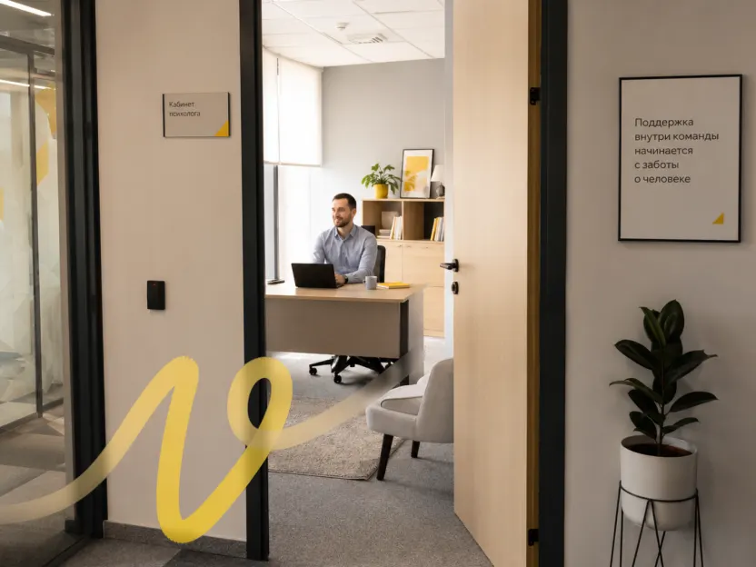

Компоненты блога
Все элементы b2b-блога Просебя на настоящих стилях из assets/blog.css. Примеры живые: наведите мышь, нажмите, пройдите клавишей Tab. Макеты — в Paper: основа, компоненты, шаблоны страниц (открывается без аккаунта). Страницы — листинг, статья, автор, 404.
Цвета
В вёрстке используем только смысловые токены. Жёлтый — для действий и акцента, как цвет текста не используем: контраст 1,8:1.
Типографика
Euclid Circular A, начертания 400 и 500. Размер / интерлиньяж в пикселях; во второй колонке — значение на телефоне (до 767 px).
моб. 36/44Блог
моб. 30/36Заголовок статьи
моб. 24/32Раздел статьи
моб. 20/28Подраздел
моб. 18/26Лид статьи и описание листинга
моб. 17/26Текст статьи в колонке 720 px
моб. 18/24Заголовок карточки
| Трекинг | −1% у заголовков от 30 px, у остального 0 |
|---|---|
| Начертания | 400 — текст, 500 — заголовки, кнопки, чипы, метки. 600 и жирнее не используем |
Движение
Декоративные длительности умножаются на --motion-scale (сейчас 5 — медленная версия). Нажатие и загрузку не замедляем. При «уменьшить движение» остаются только плавные появления.
| Наведение | 750 мс, ease — подчёркивания, фон кнопок и чипов. Только мышь |
|---|---|
| Обложка карточки | scale(1.03) за 1250 мс, ease-out cubic-bezier(0.23, 1, 0.32, 1) |
| Нажатие | 160 мс: кнопки и чипы scale(0.97), карточка scale(0.98). Цвет не меняем |
| Появление картинки | opacity 0 → 1 за 200 мс после загрузки |
| Новые карточки | opacity и сдвиг 8 px за 1500 мс, по очереди через 250 мс |
| Скелетон | блик волной по всем плашкам за 1600 мс |
| Прогресс чтения | без анимации |
Кнопки
Скругление pill. Primary — одно главное действие на экране, secondary — второстепенное.
| Размеры | M — высота 40, поля 20; L — высота 56, поля 32. Текст ui 15/20, 500 |
|---|---|
| Primary | фон action-primary #FFB800, при наведении #F6A300 |
| Secondary | контур 1,5 px чёрный, фон прозрачный, при наведении bg-cool |
| Состояния | нажатие scale(0.97); фокус — кольцо 2 px; загрузка — прозрачность 40%, текст «Загружаем…» |
| Телефон | в CTA и 404 кнопка на всю ширину, ссылка под ней по центру |
Ссылки
Три вида: в тексте, тихая (меню, подвал, автор) и со стрелкой (переход к списку).
По данным исследования Работа.ру
| В тексте | в теле статьи и в тексте CTA. Подчёркивание 2 px accent, отступ 4; при наведении подчёркивание чёрное |
|---|---|
| Тихая | без подчёркивания; при наведении появляется жёлтое 2 px |
| Со стрелкой | ui 15/20, 500; при наведении стрелка сдвигается на 3 px |
| Скопировать ссылку | высота 32, при наведении подложка bg-cool; после нажатия 2 с «Ссылка скопирована». Соцсетей нет |
Чипы категорий
Ссылки на страницы категорий, а не фильтр на месте. Число статей — для доверия.
| Размер | высота 32, поля 12, скругление 8, зазор 6. Текст ui 15/20 |
|---|---|
| Обычный | фон bg-cool, число text-secondary; наведение — bg-cool-strong |
| Текущий | фон bg-selected #FEDB50, текст 500, число чёрное, aria-current="page" |
| Телефон | одна строка, прокрутка вбок от края экрана |
Хлебные крошки
В статье — путь «Блог / категория», на категории и авторе — «← Блог». Строка под «← Блог» есть и на главной, пустая, чтобы заголовок не прыгал.
| Текст | meta 14/20, text-secondary; разделитель «/» цвета slate-300; при наведении — чёрный |
|---|
Показать ещё
Пагинация листинга, категории и автора: по 12 карточек. Кнопка — ссылка на /page/N/, скрипт дописывает карточки и меняет адрес.
| Вид | secondary L на линии border-default |
|---|---|
| Загрузка | кнопка «Загружаем…», в сетке скелетоны; затем карточки появляются по очереди, фокус — на первую новую |
| Прямой заход | на /page/N/ — эта страница целиком и ссылка «← Предыдущие статьи» |
| Конец | когда статьи закончились, кнопка исчезает |
Карточка статьи
Один компонент для листинга, категорий, автора, похожих статей и 404. Кликабельна целиком. Подробная витрина — card.html.
| Ширина | 416 на десктопе (3 в ряд), ½ на планшете, 343 на телефоне, 280 в карусели похожих |
|---|---|
| Обложка | 4:3, скругление radius-image 8. WebP 416/832 через srcset. Без обложки — кремовая заглушка с фирменной линией |
| Отступы | обложка → категория 20, категория → заголовок 8, заголовок → анонс 8, анонс → мета 16 |
| Текст | категория meta 500 с жёлтой точкой 8 px; заголовок card-title до 3 строк; анонс 15/22 до 3 строк; мета с иконками календаря и часов 14 px |
| Состояния | наведение — обложка 103% и жёлтое подчёркивание заголовка; нажатие scale(0.98); фокус — кольцо 2 px вокруг карточки; загрузка — скелетон |
Шапка статьи
Крошки, H1, лид, строка автора с датой и временем чтения, обложка в ширину колонки.
Зачем компании корпоративный психолог и что он реально делает
Четыре формата работы корпоративного психолога, цифры Работа.ру и SHRM и почему штатная ставка не гарантирует реальную обращаемость.
| Отступы | крошки → H1 16, H1 → лид 24, лид → мета 24, мета → обложка 32 |
|---|---|
| Строка автора | линии сверху и снизу border-default, поля 16. Аватар 32 с фавиконкой на bg-cool, имя — ссылка на страницу автора |
| Обложка | 720 × 540, WebP 832/1440, загружается первой (fetchpriority="high") |
| Телефон | «Скопировать ссылку» убираем из шапки — она есть в конце статьи |
| Прогресс чтения | жёлтая полоса 3 px под шапкой сайта, только в статье |
Оглавление
Пункты — заголовки H2. На десктопе прилипает справа, на планшете и телефоне — сворачиваемый блок перед текстом.
| Десктоп | без подложки; линия слева 2 px bg-cool, у текущего раздела — жёлтая, текст чёрный 500; остальные серые. Отступ от шапки при прилипании 32 |
|---|---|
| Мобильный | фон bg-cool, скругление 8, поля 16; закрывается после выбора пункта |
Текст статьи
Колонка 720 px. Отступы задаются на уровне текста, а не у каждого блока.
Что делает корпоративный психолог
Психолог помогает сотруднику разобраться со стрессом, тревогой, эмоциональным выгоранием и рабочими конфликтами.
Групповые программы
Специалист проводит лекции, вебинары и практические занятия для сотрудников, команд и руководителей.
| Абзацы | body 18/30, между абзацами 20 |
|---|---|
| H2 | 30/38, 500, сверху 48, после — 12 |
| H3 | 22/30, 500, сверху 32, после — 12 |
| Блоки | цифры, выноска, цитата, картинка, таблица — отступ 32 сверху и снизу |
Списки
Только настоящие списки. Точки и цифры текстом из Tilda сборщик превращает в списки.
- Сколько сотрудников воспользовались поддержкой?
- Какие форматы востребованы?
- Конфиденциальность и защита личных данных.
- Стигматизация.
| Маркер | жёлтая точка 6 px, отступ текста 24 |
|---|---|
| Номер | 500, отступ текста 32 |
| Пункты | body 18/30, между пунктами 8 |
Ключевые цифры
1–3 цифры из исследования в ряд; на телефоне — столбиком. Под рядом — источник.
- 63%
- компаний следят за психологическим состоянием сотрудников
- 82%
- из них не дают персоналу никаких инструментов поддержки
- 4%
- компаний держат корпоративного психолога
| Цифра | figure 48/56 (моб. 36/44), 500, −1%, табличные цифры; над ней жёлтая полоска 24 × 4 |
|---|---|
| Подпись | body-s 16/24; источник meta text-secondary, через 12 |
| Фон | без подложки |
Выноска
Совет или главная мысль раздела. Не больше одной на раздел.
| Вид | фон bg-cool, скругление 16, поля 24 (моб. 16) |
|---|---|
| Текст | заголовок body 500 — необязательный; текст body |
Цитата
Слова эксперта или HR с подписью. В текущих статьях не встречается — блок на будущее.
Мы перестали ждать заявлений об уходе и стали раз в квартал спрашивать, что держит людей. Причины ухода стали видны заранее.
| Вид | без фона, жёлтая полоса 4 px слева, отступ 24 (моб. 16) |
|---|---|
| Текст | 22/32 (моб. 18/26); подпись meta: имя 500, должность text-secondary; аватар 40 — фото или инициалы на bg-cool-strong |
Картинка с подписью
Схема или иллюстрация в ширину колонки текста.

| Картинка | 720 px, скругление radius-image 8, ленивая загрузка, alt обязателен |
|---|---|
| Подпись | meta 14/20 text-secondary, через 12 |
Таблица
Строка заголовка обязательна. Под таблицей — копирование (вставляется в Excel и Google Таблицы) и скачивание CSV.
| Вопрос | Сотрудник 1 | Сотрудник 2 |
|---|---|---|
| Что держит? | Команда, руководитель | Удобный график |
| Что выталкивает? | Нагрузка, нет роста | Отношения в команде |
| Вид | рамка border-default, скругление 16; ячейки 12 × 16, body-s; шапка на bg-cool, 500 |
|---|---|
| Телефон | таблица прокручивается вбок, первый столбец 156 px закреплён |
| Действия | meta 500 text-secondary с иконками 14; после копирования 2 с «Таблица скопирована» |
Источники
В конце текста. Ссылкой — название материала, серым — издатель. Слова из текста, в которые была зашита ссылка, не повторяем.
Источники
- 42% of Employee Turnover Is Preventable but Often Ignored — Gallup
- DOI 10.1108/MRR-02-2021-0148 — научная статья
| Вид | линия сверху, отступ 32; заголовок h3; пункты body-s с номером text-secondary; ссылка с жёлтым подчёркиванием и ↗ |
|---|---|
| Без названия | научная статья — номер DOI; остальное — название издателя |
CTA
Один на статью, всегда в конце. Текст — из последнего раздела статьи про Просебя.
Психологическая поддержка для ваших сотрудников
Онлайн-сессии с психологами и психотерапевтами, инструменты самопомощи, диагностика и вебинары в одной EAP-платформе.
Посмотрите, как может быть устроена такая программа: психолог для сотрудников от Просебя.
- Специалисты с опытом от 3 лет и минимум 50 часами супервизий
- HR видит обезличенную аналитику по командам
| Вид | фон bg-cool-strong, скругление 24 (моб. 16), поля 48 (моб. 24), между частями 24 |
|---|---|
| Пункты | необязательные; жёлтый кружок 20 с галочкой, body-s |
| Телефон | кнопка на всю ширину, ссылка под ней по центру |
Автор
Шапка страницы автора. Сейчас автор один — редакция; для авторов-людей вместо фавиконки фото.
| Аватар | 120 (моб. 80), рамка border-default, фон bg-cool, знак 58% высоты |
|---|---|
| Текст | имя display 56/64 (моб. 36/44); роль и число статей meta text-secondary; био lead до 720 px |
| Телефон | столбиком: аватар над именем |
Шапка сайта
Как на prosebya.ru. Прилипает к верху, после прокрутки — линия снизу. Меньше 1024 px — бургер и меню на весь экран.
| Высота | 64 (моб. 56); логотип SVG 114 × 32 (моб. 100 × 28) |
|---|---|
| Меню | meta 14/20, зазор 32, тихие ссылки; кнопка primary M |
| Мобильное меню | на весь экран: пункты 24/32 через 24, кнопка L внизу на всю ширину; закрывается крестиком и Esc |
Как пользоваться разделом
Рекомендации собраны только по официальной документации WordPress, Google Search Central и справке Яндекс Вебмастера — ссылка на источник стоит у каждого пункта. Главная цель — переехать с Tilda, не потеряв позиции в поиске: адреса статей сохраняются, всё, что меняется, закрывается постоянными редиректами.
Адреса и редиректы
Адрес — то, по чему поисковики и внешние ссылки находят статью, поэтому его лучше не менять, а всё, что меняется, закрыть редиректами.
| Сохранить адреса статей | Постоянные ссылки: свой формат /blog-b2b/%postname%/. Слаги статей в WordPress — те же, что на Tilda (они в assets/posts.js). Постоянные ссылки «никогда не должны меняться». WordPress: постоянные ссылки |
|---|---|
| Категории и автор | Основа для рубрик — blog-b2b/category → /blog-b2b/category/<slug>/; убрать основу из адреса нельзя. Архив автора — /author/<имя>/. WordPress: постоянные ссылки |
| Карта старых и новых адресов | До запуска составить таблицу «старый URL → новый URL» по карте сайта и аналитике. Для статей это /blog-b2b/<slug> → /blog-b2b/<slug>/; проверить каждый адрес из списка. Google: переезд с изменением URL |
| Только 301 на сервере | Всё, что меняет адрес, — постоянный серверный редирект 301 (или 308), не JavaScript и не meta refresh. Держать редиректы минимум год, лучше всегда. Google: редиректы Google: переезд с изменением URL Яндекс: смена структуры и дизайна |
| Убрать поддомен Tilda | Сейчас ссылки внутри блога ведут на tilda.prosebya.ru/blog-b2b/…. Настроить 301 с этих адресов на prosebya.ru/blog-b2b/…: Яндекс не учитывает rel="canonical" между разными поддоменами (так в блоге Яндекса на 2019 год), а редирект — самый сильный сигнал для Google. Блог Яндекса для вебмастеров, 2019 Google: канонические URL |
| Внутренние ссылки | Ссылки внутри статей сразу ставить на новые адреса, а не на редиректы. Сборщик прототипа уже так делает. Google: переезд с изменением URL |
| Тот же домен | Блог должен остаться на prosebya.ru/blog-b2b/. Перенос на поддомен (например, blog.prosebya.ru) — это смена адресов всех страниц со всеми последствиями переезда. Google: переезд с изменением URL |
Тестовый сайт и запуск
| Закрыть тестовый сайт | Галочка «Попросить поисковые системы не индексировать сайт» добавляет noindex, nofollow; это просьба, а не запрет доступа — тест лучше ещё и закрыть паролем. WordPress: настройки чтения |
|---|---|
| Не запрещать в robots.txt | Если закрыть страницы в robots.txt, поисковик не увидит noindex и может проиндексировать адрес по внешним ссылкам. Google: noindex |
| При запуске | Снять галочку и проверить, что на страницах нет noindex и неправильного canonical. Яндекс: смена структуры и дизайна |
| Карта сайта | В WordPress она встроена: /wp-sitemap.xml со статьями, рубриками и авторами, ссылка на неё сама попадает в robots.txt. Если SEO-плагин делает свою карту — оставить одну. WordPress: карта сайта в ядре |
| Сообщить поисковикам | Отправить карту в Search Console и Яндекс Вебмастер, проверить, что новые адреса отвечают кодом 200, отправить важные страницы на переобход — в Яндексе они попадают в поиск в течение двух недель. Google: переезд с изменением URL Яндекс: смена структуры и дизайна |
| Следить после запуска | Отчёт об индексировании в Search Console: старые адреса должны уходить, новые — появляться. Google: переезд с изменением URL |
Заголовки, описания, canonical
| Title и description | Перенести из content/meta/<slug>.json в поля SEO-плагина. У каждой страницы — свои: по Яндексу, одинаковые заголовки и описания «ухудшают видимость сайта в поисковой выдаче». Google: заголовки страниц Яндекс: одинаковые заголовки и описания |
|---|---|
| Заголовки листинга | У категорий и автора — свои title, а не копия главной блога; у страниц пагинации — с номером: «Блог — страница 2». Яндекс: одинаковые заголовки и описания Google: заголовки страниц |
| Canonical | Каждая страница ссылается на себя полным адресом с https://; адрес в canonical, в карте сайта и во внутренних ссылках один и тот же. Google: канонические URL Google: переезд с изменением URL |
| Картинка для соцсетей | og:image — по одной на статью из assets/og/. Google тоже учитывает её как основную картинку страницы. Google: картинки |
Структурированные данные
| Статья | Разметка BlogPosting: headline, image, datePublished и dateModified в формате ISO 8601, author с именем и ссылкой на страницу автора. Картинки — от 50 тыс. пикселей, желательно в пропорциях 16:9, 4:3 и 1:1. Google: разметка Article |
|---|---|
| Хлебные крошки | Разметка BreadcrumbList для пути «Блог → категория → статья»: у каждого пункта position, name и item. Google: разметка BreadcrumbList |
Пагинация и «Показать ещё»
| Свой адрес у страницы | Каждая страница списка — отдельный адрес /page/N/, который открывается напрямую. Google: пагинация и подгрузка |
|---|---|
| Canonical | Здесь поисковики расходятся. Google: не делать первую страницу канонической для всей серии — у каждой страницы свой canonical. Google: пагинация и подгрузка Яндекс в блоге для вебмастеров (2019): для листингов «имеет смысл» указывать канонической первую страницу. Блог Яндекса для вебмастеров, 2019 Предлагаю у каждой страницы свой canonical, как у Google, а окончательно решить с SEO-специалистом. |
| Кнопка — это ссылка | «Показать ещё» — обычная ссылка <a href="/page/N+1/">: по ней робот находит следующие статьи, скрипт только перехватывает клик. Так сделано в прототипе. Google: пагинация и подгрузка |
| rel="next/prev" | Google их больше не использует; добавлять не обязательно. Google: пагинация и подгрузка |
Картинки
| Обычные img | Обложки — через <img>, а не фоном в CSS: картинки из CSS Google не индексирует. Google: картинки |
|---|---|
| Размеры | WordPress сам выводит srcset и sizes для зарегистрированных размеров: добавить ширины 416, 832 и 1440 и передать sizes из assets/blog.js. WordPress: адаптивные картинки Google: картинки |
| Alt и имена файлов | Alt описывает, что на картинке, без списка ключевых слов; имена файлов — понятные. В assets/covers/ файлы уже названы по слагам. Google: картинки |
| Формат | WebP поддерживается Google Search. Google: картинки |
Шаблоны, скорость, 404
| Шаблоны | Листинг — home, категория — category, автор — author, статья — single, 404 — 404. Иерархия одна для классических и блочных тем; в блочной теме это файлы .html в templates/. WordPress: иерархия шаблонов |
|---|---|
| Шрифт | Euclid Circular A подключить в theme.json через fontFace из файлов темы (file:./assets/fonts/…woff2). WordPress: шрифты в theme.json |
| Текст в HTML | Всё, что должно попадать в поиск, — в HTML сразу, без JavaScript. В прототипе так и есть: карточки и тексты приходят разметкой. Яндекс: смена структуры и дизайна |
| Core Web Vitals | Цели: LCP до 2,5 с, INP до 200 мс, CLS до 0,1. Отчёт — в Search Console. Google: Core Web Vitals |
| 404 | Страница «не найдено» должна отвечать кодом 404 (или 410), а не 200 — иначе это «мягкая 404». В WordPress за это отвечает шаблон 404. Google: коды ответа WordPress: иерархия шаблонов |